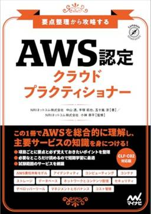
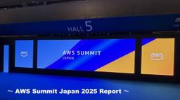

Technology - NRIネットコムBlog
https://tech.nri-net.com/archive/category/Technology
NRIネットコム社員が業務で利用している幅広い技術やナレッジについて紐解くブログメディアです。
フィード

『AWS認定 クラウドプラクティショナー』の試験対策本を書きました。 5
5
Technology - NRIネットコムBlog
こんにちは。中山です。 今回、AWSの基礎コース試験の1つである「AWS認定 クラウドプラクティショナー」の試験対策本を執筆しましたので、内容についてご紹介します。 本のタイトルは「要点整理から攻略する『AWS認定 クラウドプラクティショナー』」で、2025年7月14日に出版予定（現在、予約受付中）です。 要点整理から攻略する『AWS認定 クラウドプラクティショナー』作者:NRIネットコム株式会社,中山 透,手塚 拓也,五十嵐 涼マイナビ出版Amazon 本の内容について 章立ては次のようになっています。 第1章 AWS試験概要と学習方法 第2章 Amazon Web Servicesって？ …
3日前

【現地レポート】AWS Summit Japan 2025 参加記
Technology - NRIネットコムBlog
はじめに こんにちは！2年目の井手亮太です。6月25日、26日に開催された AWS Summitに行ってきましたので、現地の様子などを皆様にお伝えできればと思います！ イベント概要 イベントの名称 : AWS Summit Japan 開催日 : 6月25日（水）、6月26日（木） 会場 : 幕張メッセ (リモート参加も可能) 参加費用 : 無料 aws.amazon.com 参加できなかった方もご安心を！7月11日（金）までアーカイブ配信されていますので、ぜひチェックしてみてください！ https://jpsummit-smp25.awsevents.com/public/applicati…
4日前

【生成AI × ゲーム開発】Amazon Q CLIで始める対話型ゲーム開発
Technology - NRIネットコムBlog
はじめに 作成したゲーム 実行環境 作成過程 おわりに はじめに こんにちは！山本です！ 今回AWS公式で紹介された「Amazon Q CLIを使ってゲームを作ろう」キャンペーンに参加しました。このキャンペーンでは、Amazon Q CLIを活用してオリジナルのゲームを開発し成果物を共有することで、なんとTシャツがもらえるというユニークな企画です。今回はこのキャンペーンをきっかけに、簡単なタイピングゲームを作成してみました。この記事では、ゲームの概要や開発過程についてご紹介します。 aws.amazon.com 作成したゲーム 今回作成したタイピングゲームがこちらになります。 実行環境 本稿で…
8日前
Kubernetesのスケーリングについて触ってみた 〜Horizontal Pod AutoscalerとCluster Autoscaler〜
Technology - NRIネットコムBlog
クラウド事業推進部の石倉です。 今回はKubernetesのスケーリングで利用されるPodのスケーリングをするHorizontal Pod AutoscalerとノードのスケーリングをするCluster Autoscalerについて手を動かしながら確認してみたのでハンズオンのような形で紹介します。 Horizontal Pod Autoscalerについて 準備 HPAを試してみる Cluster Autoscalerについて 準備 Cluster Autoscalerを試してみる 最後に 参考 Horizontal Pod Autoscalerについて まずはHorizontal Pod A…
9日前
CloudFormation Stackの構成逸脱を定期監視する
Technology - NRIネットコムBlog
本記事は オブザーバビリティウィーク 5日目の記事です。 💻📄 4日目 ▶▶ 本記事 ▶▶ 6日目 🔔🏢 はじめに ドリフト検出とは 監視構成 実装手順 実装の流れ 1. EventBridgeスケジュールでLambda①を定期実行 2. Lambda①でCloudFormation ドリフト検出を実行 3. ドリフト検出された結果をEventBridgeルールでキャッチし、Lambda②を実行 4. Lambda②でドリフト検出の結果を取得し、SNSで通知 実際の通知を確認 実運用のおすすめ AWS Configルールとの違い 終わりに はじめに こんにちは、藤本です。オブザーバビリティウィ…
9日前
Amazon CloudWatchのAPI活用術 〜グラフの自動スクリーンショット〜
Technology - NRIネットコムBlog
本記事は オブザーバビリティウィーク 4日目の記事です。 💻📄 3日目 ▶▶ 本記事 ▶▶ 5日目 🔔🏢 はじめに 想定するシーン 解決したい課題 そこでMetricWidgetを活用しませんか？ MetricWidgetの利点 MetricWidgetからグラフのスクリーンショットを取得する方法 作業のアウトライン Amazon CloudWatchのMetricWidgetを取得 pythonを使用したグラフのスクリーンショットの自動取得 まとめ はじめに オブザーバビリティウィーク4日目を担当させていただきます。北野と申します。 現在の業務ではクラウドサービス（AWS）を用いたお客様のア…
10日前
【速報】NRIネットコム社員が「2025 Japan AWS Ambassadors」「2025 Japan AWS Top Engineers」「2025 Japan AWS Jr. Champions」「2025 Japan All AWS Certifications Engineers」に選出されました！
Technology - NRIネットコムBlog
こんにちは、ブログ運営担当の栗田です。 本日6/25に発表されました「2025 Japan AWS Ambassadors」「2025 Japan AWS Top Engineers」「2025 Japan AWS Jr. Champions」「2025 Japan All AWS Certifications Engineers」に、NRIネットコム社員が選出・表彰されました！！ 本ブログでは速報として、選出・表彰されたメンバーをご紹介いたします。（メンバーの記載は五十音順となります） 2025 Japan AWS Ambassadors NRIネットコムからは、佐々木拓郎・志水友輔・丹勇人…
10日前
2025 Japan AWS Jr. Championsに選出いただきました
Technology - NRIネットコムBlog
はじめに Japan AWS Jr. Championsとは Japan AWS Jr. Championsになるために求められること 活動報告について Challenge Influence Output 活動への意気込み 終わりに はじめに こんにちは、藤本です。 本日6月25日（水）APN Blogにて「2025 Japan AWS Jr. Champions」が発表され、私もその一員として選出いただきました。 aws.amazon.com 入社当初から目指していた表彰プログラムであり、今回こうして一つの目標を達成できたことに、ほっとしています。 今後は「Japan AWS Jr. Ch…
10日前
【Cfnテンプレートあり！】 AWS監視をもっと自由に ！ CloudWatch Metric Math活用術3選
Technology - NRIネットコムBlog
本記事は オブザーバビリティウィーク 3日目の記事です。 💻📄 2日目 ▶▶ 本記事 ▶▶ 4日目 🔔🏢 はじめに Amazon CloudWatch Metric Math とは 実務で使える評価指標3選 ①移動平均を使った異常検知スコア ②ALBのターゲットグループリクエスト集中度スコア ③アラーム感度スコア おわりに はじめに こんにちは！オブザーバビリティウィーク3日目担当の山本です！ 皆さんは、 AWS 環境に構築したシステムに監視を入れる際に Amazon CloudWatch（以後、CloudWatch）アラームの評価値はどのように設定しているでしょうか。 通常 CloudWat…
11日前
Cloud Monitoringで複数プロジェクトを監視しよう
Technology - NRIネットコムBlog
本記事は オブザーバビリティウィーク 2日目の記事です。 💻📄 1日目 ▶▶ 本記事 ▶▶ 3日目 🔔🏢 1. はじめに 2. 実装 2.1 プロジェクトの追加 2.2 アラートポリシーの設定 3. アラートの確認 4. まとめ こんにちは。横田です。 本ブログでは監視用のプロジェクトを使用して複数プロジェクトのリソースを監視する方法について話します。 想定する読者層は以下の通りです。 Cloud Monitoringを触り始めた人 Google Cloudのオブザーバビリティに興味がある人 1. はじめに 使用するサービスはCloud Monitoringです。本ブログで検証する構成は下図に…
12日前
Cloud Logging入門 ログベースの障害検知メールを飛ばそう
Technology - NRIネットコムBlog
本記事は オブザーバビリティウィーク 1日目の記事です。 💻📄 告知記事 ▶▶ 本記事 ▶▶ 2日目 🔔🏢 1. はじめに 2. Cloud LoggingとCloud Monitoringの違い 3. 実装 3.1 インスタンス作成 3.2 VM停止アラートポリシー作成 3.2.1 ログ抽出用クエリ作成 3.2.2 通知チャンネルの設定 3.3 VM起動アラートポリシー作成 3.4 メール確認 4. まとめ こんにちは。横田です。 本ブログでは、Google CloudのCloud Loggingを使用してVMが停止・起動したときのログを抽出しエラー検知メールを飛ばす方法について話します。 …
12日前
「AWS Summit Japan 2025」AWS活用度診断コンテンツ公開、診断後ブース来訪の方に、特別ノベルティご提供
Technology - NRIネットコムBlog
NRIネットコムは、2025年6月25日(水)～26日(木)に開催される国内最大のAWSイベント「AWS Summit Japan 2025」に、ブロンズスポンサーとして出展します。 「AWS Summit Japan 2025」は、デベロッパーや ITプロフェッショナル、ビジネスリーダーなどが参加する日本最大の "AWS を学ぶイベント"です。 NRIネットコムは、AWSの企業での活用の高度化、効率化、コスト削減等を事業として支援しています。 今回のサミットでは、そのAWSに関する活用度を診断するコンテンツを準備しました。活用度診断では、7項目のアンケートでAWSの活用度がわかります。 「A…
16日前
ブログイベント「オブザーバビリティウィーク」始まります！
Technology - NRIネットコムBlog
こんにちは、ブログ運営担当の小野です。 今月のブログイベントについてお知らせします！ 6月後半のブログイベントは「オブザーバビリティウィーク」です！ NRIネットコムのメンバーによるオブザーバビリティに関する記事をお楽しみください！ 記事掲載日と記事内容 更新され次第、こちらの記事にもリンクを掲載します。ぜひ、ご期待ください！ 6/23(月)：横田真斗① tech.nri-net.com 6/24(火)：横田真斗② tech.nri-net.com 6/25(水)：山本将望 tech.nri-net.com 6/26(木)：北野友亮 tech.nri-net.com 6/27(金)：藤本匠海 …
17日前
止められない大規模システムを止めずにクラウド移行する方法とは？ ～段階移行でリスクを最小化～
Technology - NRIネットコムBlog
こんにちは、ブログ運営担当の小野です。 6月20日(金)16:00～17:00、当社主催ウェビナー「止められない大規模システムを止めずにクラウド移行する方法とは？ ～段階移行でリスクを最小化～」を開催します。 稼働を止められない大規模な業務システム。クラウドへのマイグレーションを、どう安全に進めるかについて先行事例とともに解説します。 ウェビナー概要 長年にわたり、改修や拡張を重ねてきた大規模な業務システム。オンプレ環境で安定して稼働していても、老朽化や保守の難しさから、クラウド移行は避けて通れません。 しかし、基幹系を含むシステムを止めずに移行するには、慎重なアプローチが必要です。 例え…
19日前
AWSアカウント管理のベストプラクティス 組織（AWS Organizations）管理からユーザー（IAM）管理まで
Technology - NRIネットコムBlog
こんにちは、ブログ運営担当の小野です。 6月19日(木)12:00～13:00、当社主催ウェビナー「AWSアカウント管理のベストプラクティス 組織（AWS Organizations）管理からユーザー（IAM）管理まで」を開催します。 本ウェビナーでは、AWS利用料削減と、組織のマルチアカウント管理やセキュリティ統制を同時に実現するための、AWS OrganizationsとIAMを利用したマルチアカウント管理のベストプラクティスを徹底解説します。 解説を担当するのは、NRIネットコムでAWS事業の推進をおこなう、AWS Ambassador & AWS Top Engineers & AWS…
19日前
既存システムの改修なし！AWS契約の移行でコスト削減と運用の最適化を実現 AWS請求代行サービスを導入した事例を徹底解説！
Technology - NRIネットコムBlog
こんにちは、ブログ運営担当の小野です。 6月17日(火)16:00～17:00、当社主催ウェビナー「既存システムの改修なし！AWS契約の移行でコスト削減と運用の最適化を実現 AWS請求代行サービスを導入した事例を徹底解説！」を開催します。 ウェビナー概要 本ウェビナーでは、AWS Organizationsの利用制限や既存システムの変更なしに、AWS請求代行サービスを導入した企業事例をわかりやすくご紹介します。 ■背景と課題 多くの企業がAWSを活用する中で、次のような課題に直面しています。 ・AWSアカウントの増加による、セキュリティやガバナンスの管理負担 ・AWS利用の拡大に伴う、コストの…
20日前
Systems ManagerでEC2をポートスキャンしてみた
Technology - NRIネットコムBlog
はじめに 今回やりたいこと AWS Systems Managerとは Run Commandとは ポートスキャンとは やってみた ポートスキャンの対策はどうすればいいのか おわりに はじめに こんにちは！山本です！ 普段はインフラエンジニアとして基盤構築や保守運用の業務を行っています。 まだまだ駆け出しエンジニアなので日々知識を吸収し、刺激の多い日々を送っています。 自己研鑽にてセキュリティに関する資格勉強を進める中で攻撃手法の一つとしてポートスキャンを学びました。 近年、ポートスキャンはますます巧妙化し特にIoT機器や家庭用ルーターなどが標的にされることが増えています。 そこで今回はその学…
20日前
AWSマンスリーアップデートピックアップ！！ 2025年6月分 ～NRIネットコム TECH AND DESIGN STUDY #70～
Technology - NRIネットコムBlog
こんにちは、ブログ運営担当の小野です。 7/9（水）12:00～12:30 当社主催の勉強会「NRIネットコム TECH & DESIGN STUDY #70」が開催されます!! 今回のTECH & DESIGN STUDYでは、日々数多く発表されているAWSのアップデートのうち、当社の腕利きエンジニア目線で厳選した前月のアップデート情報をお話させていただきます！ 【登壇者】 西内渓太 2022年NRIネットコム入社のクラウドエンジニア 2024 Japan AWS All Certifications Engineers 執筆したブログ https://tech.nri-net.com/ar…
22日前
ETLだけじゃない！AWS Glueで学ぶ分散処理 入門編 ～NRIネットコム TECH AND DESIGN STUDY #69～
Technology - NRIネットコムBlog
こんにちは、ブログ運営担当の海野です。 6/23（月）19:00～20:00 当社主催の勉強会「NRIネットコム TECH & DESIGN STUDY #69」が開催されます!! AWS Glueで分散処理ができることは知っていても、実際に構築したことがない人も多いのではないでしょうか。 今回はGlueの特色の一つである分散処理にスポットを当てます。 Glueの主要機能を紹介しつつ、Apache Sparkのアーキテクチャや検証事例を交えて解説していきます。 ETLだけでないAWS Glueの特色に、この機会にぜひ触れてみてください！ 【登壇者】 和田 将利 NRIネットコム株式会社 クラウ…
23日前
IAMのマニアックな話 2025を執筆して、見えてきたAWSアカウント管理の現在 ～NRIネットコム TECH AND DESIGN STUDY #68～
Technology - NRIネットコムBlog
こんにちは、ブログ運営担当の海野です。 6/17（火）12:00～13:00 当社主催の勉強会「NRIネットコム TECH & DESIGN STUDY #68」が開催されます!! JAWS Days 2025で書くと宣言していた技術同人誌、『IAMのマニアックな話 2025』。 宣言どおり執筆し、5月31日に発表しました。 この本では、IAM Identity Centerへの移行ステップ、ABACやSCPによる制御の高度化、リアルタイム監査やAIによるポリシー最適化、Verified AccessやVerified Permissionsといった新サービスの活用方法まで、今だからこそ知って…
24日前
Amazon Nova Canvas で画像生成アプリを構築した話
Technology - NRIネットコムBlog
はじめに Amazon Nova Canvas とは 全体構成 画面遷移 アーキテクチャ 設計のポイント 1. Claude Sonnet 4 の使用 2. Webサイト上から様々なパラメータを指定可能 意図した画像を作成するポイント 1. タスクタイプ 2. リクエストパラメータ 3. プロンプトエンジニアリング その1 含めたくない要素は ネガティブプロンプト内に記述する その2 曖昧な表現は避け、具体的な指示を出す おわりに はじめに こんにちは。インフラエンジニア2年目の井手亮太です。 日々、AWSを中心としたクラウドインフラの設計・構築・運用に携わりながら、技術の幅を広げるべく新しい…
1ヶ月前
Swagger UIを構成する静的リソースの編集方法
Technology - NRIネットコムBlog
1. はじめに 2. Swagger UIとは 3. Swaggerの静的リソースを編集する方法 3-1. 必要なライブラリの依存関係注入 3-2. Swaggerに表示させるAPIの作成 3-3. Swagger UIの編集 編集するためのコード 3-4. 起動 4. まとめ 5. あとがき 1. はじめに 皆さんこんにちは、新卒2年目の松澤武志です！ 普段はJavaやAngularのアプリケーション開発を行い、趣味でAWSコンソールをいじっています！ AWSに関するブログを中心に執筆してきましたが、今回はアプリケーション開発で得られた知見を共有させていただきたいと思います。 突然ですが、開…
1ヶ月前
SNS・SQS・Lambdaを使ったファンアウト構成の注意点
Technology - NRIネットコムBlog
こんにちは。上村です。 以前、SNSとSQSにてファンアウトを構成*1しLambdaにメッセージを処理させる仕組みを構築したことがあります。 AWS経験が浅い中での作業だったので、勉強になりました。 その中で、注意ポイントがいくつかあると感じたので本記事で紹介していきます。 本記事で触れないこと SQS設計の上での注意点 標準キューと FIFO キューを使い分ける 適切に可視性タイムアウトを設定する DLQを設計する Lambda設計の上での注意点 べき等性を考慮する 性能試験なども踏まえてメモリを設定する バッチサイズを意識したスクリプトを組む まとめ 本記事で触れないこと 本構成で利用して…
1ヶ月前
もう迷わない！VS CodeとDev Containerで始める理想の開発環境
Technology - NRIネットコムBlog
本記事は エディタウィーク 5日目の記事です。 👩🏫 4日目 ▶▶ 本記事👨🏫 はじめまして、髙田です。 入社以来さまざまな拠点を転々と渡り歩いて、現在は大阪でバックエンドシステムの保守業務に携わっています。 「VS Code＋Dev Containerを普段使いしているからエディタウィークにブログ出さない？」と推薦されたので初ブログに挑戦です！ 今回は「エディタウィーク」の一環として、Visual Studio Code (VS Code) と Development Containers (Dev Container) を使った効率的な開発環境の構築方法についてご紹介します。 この組み…
1ヶ月前
viと、GUIエディタとの使い分け
Technology - NRIネットコムBlog
本記事は エディタウィーク 4日目の記事です。 👩🏫 3日目 ▶▶ 本記事 ▶▶ 5日目 👨🏫 こんにちは、小山です。 料理にハマり、旬の食材を美味しくいただくことに余念がない今日この頃です。 今回は、運用作業やトラブルシューティング時によく使うvi(コマンド)について、 実際に経験した事例を2つ交えて紹介したいと思います。 想定読者 vi[vim]初心者 GUIエディタが使えない作業環境でちょっと楽したいエンジニア 駆け出しエンジニア はじめに viコマンドでファイル操作 ケース1 設定ファイル書き換えたらアプリが起動しなかった ケース2 yamlファイルの整形間違ってた GUIエディタ…
1ヶ月前
ServiceNowでアプリ開発を体験してみた
Technology - NRIネットコムBlog
本記事は エディタウィーク 3日目の記事です。 👩🏫 2日目 ▶▶ 本記事 ▶▶ 4日目 👨🏫 はじめに ServiceNowとは？ TODOアプリ作成手順 1: 新規アプリケーションの作成 2: データベースの作成 3: UIの作成 4: クライアントスクリプトを設定 まとめ：開発者目線で実感したServiceNowのエディタの使いやすさ 参考リンク はじめに こんにちは！アプリ開発エンジニア2年目の桑野です。 今回は、新しく参画したプロジェクトで初めてServiceNowを使うことになった私が、エディタやIDEとしての機能ももつServiceNowというプラットフォームについて、実際の…
1ヶ月前
ソフトウェア開発とAIエディタ
Technology - NRIネットコムBlog
本記事は エディタウィーク 2日目の記事です。 👩🏫 1日目 ▶▶ 本記事 ▶▶ 3日目 👨🏫 どうも、モンスターはマンゴーロコ派の磯川です。 エディタウィークという特集に際して今回のブログを書いております。 エディタというと少し前まではEmacs、Vimなどのマニアックな話が出てくる印象でしたが、 今回は「AIエディタ」をテーマにAIとソフトウェア開発について触れたいと思います。 また、個人的に利用しているCursorというAIエディタについての所感など少しお伝えいたします。 AIとは LLM: Large Language Model AIとソフトウェア開発の関係 代表的なもの 権限と…
1ヶ月前
シンプルなテキストエディタ メモ帳の使い所は？
Technology - NRIネットコムBlog
本記事は エディタウィーク 1日目の記事です。 👩🏫 告知記事 ▶▶ 本記事 ▶▶ 2日目 👨🏫 ネットコムの岩﨑です。学生時代はメモ帳でCを書いていました。新人時代に自己紹介の掴みで擦りまくったおかげ（？）で今回のブログウィークに参加することになりました。主題とは別の掴み部分もちゃんと見てもらえてるのがわかると、これからのアウトプットでも少し工夫をしたくなってきますね。新入社員研修が終わり、これから現場に配属されるという新入社員の方々、ぜひ使ってみてください。 さて、今回は『エディタウィーク』ということで、紙とペンに代わるデジタルなツールについて書いていければな～と思っています。筆者が普…
1ヶ月前
【 技術書典18】「AWS、それぞれの戦い方」で「第1章 Keycloak on AWSでIdPを自作しよう」を書きました
Technology - NRIネットコムBlog
こんにちは西内です。 技術書典18（オフライン開催：2025/06/01、オンライン開催：2025/05/31～2025/06/15）で発表される 「AWS、それぞれの戦い方」 ー認証基盤・ファイアウォール・データ移行との実践記ー に共著として参加しました。 私は第 1 章 の「Keycloak on AWSでIdPを自作しよう」を執筆しました。 今回私が担当した箇所の紹介をしていきます。 techbookfest.org 「AWS、それぞれの戦い方」 ー認証基盤・ファイアウォール・データ移行との実践記ー の章構成 第1章 Keycloak on AWSでIdPを自作しよう (執筆 : 西内渓…
1ヶ月前
【 技術書典18】「AWS、それぞれの戦い方」で「第2章 ファイアウォールの戦略と継続的運用改善」を書きました
Technology - NRIネットコムBlog
大林です。 技術書典18（オフライン開催：2025/06/01、オンライン開催：2025/05/31～2025/06/15）で発表される 「AWS、それぞれの戦い方」 ー認証基盤・ファイアウォール・データ移行との実践記ー に共著として参加しました。 第 2 章 の「ファイアウォールの戦略と継続的運用改善」を書きました。 今回私が担当した箇所の紹介をしていきます。 techbookfest.org 「AWS、それぞれの戦い方」 ー認証基盤・ファイアウォール・データ移行との実践記ー の章構成 第1章 Keycloak on AWSでIdPを自作しよう (執筆 : 西内渓太) 第2章 ファイアウォー…
1ヶ月前